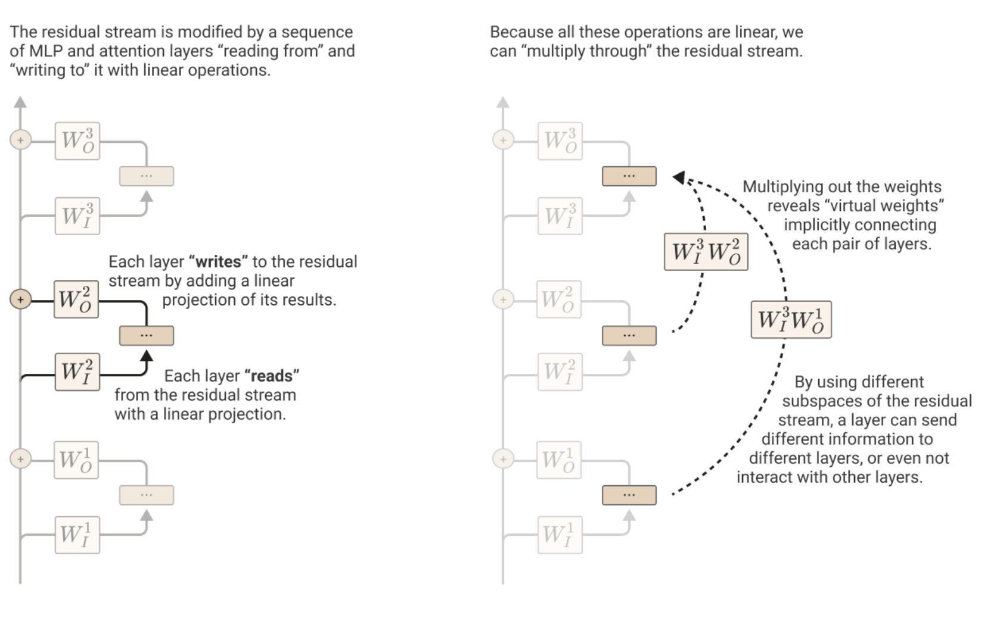
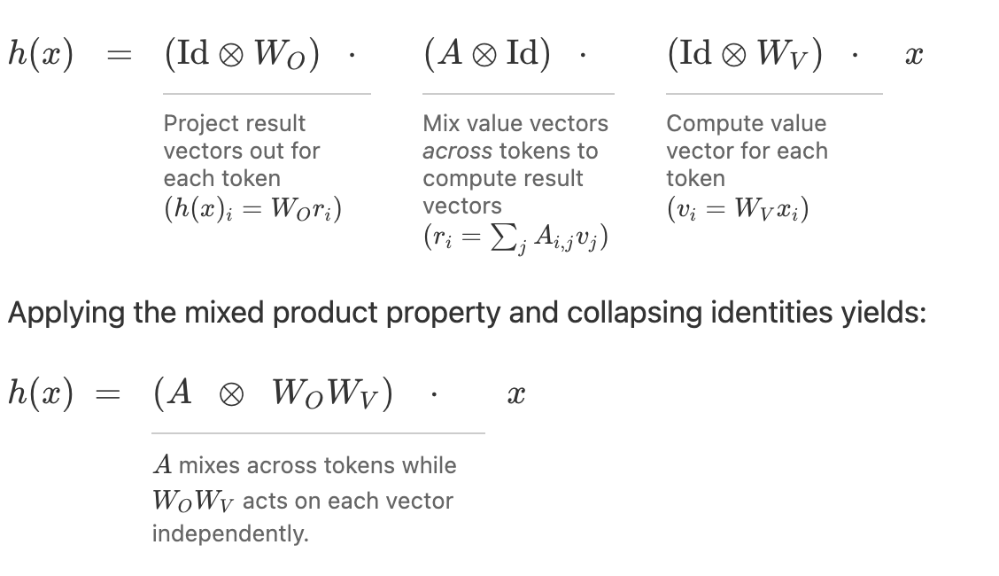
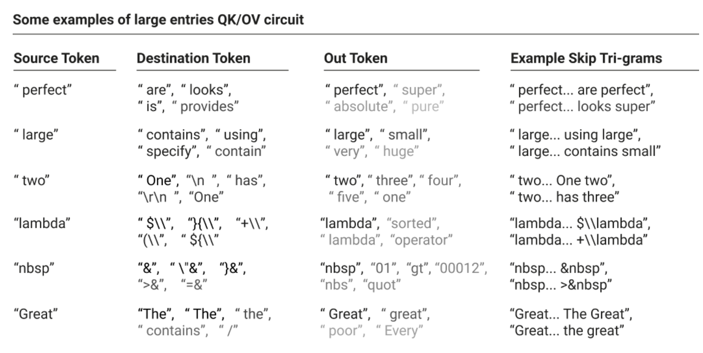
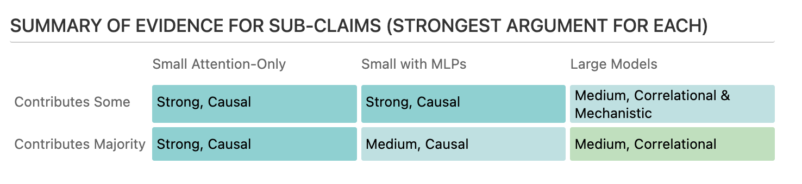
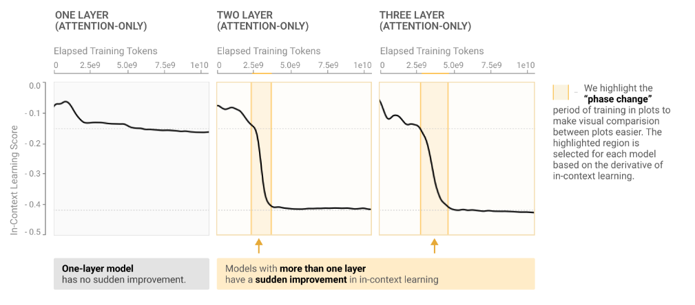

# CMSC 25750/35750: ## Large Language Models ## Lecture 4: Mathematical Circuits and Induction Heads <p style="text-align: center;"> Chenhao Tan<br/> University of Chicago<br/> @ChenhaoTan, @chenhaotan.bsky.social<br/> chenhao@uchicago.edu </p>
## Logistics - Discord use - Project feedback
## From MLPs to attention circuits This lecture focuses on two papers: - Elhage et al. (2021): a mathematical framework for decomposing transformer computations into circuits - Olsson et al. (2022): induction heads implement the majority of in-context learning, and form in a phase change early in training We also cover the logit lens (nostalgebraist, 2020): applying the unembedding matrix to intermediate residual states to see what the model would predict at each layer.
## Today's agenda * Paper overviews * Deep dives * Discussion
## Today's agenda * Paper overviews * <span style="color: #767676;">Deep dives</span> * <span style="color: #767676;">Discussion</span>
## A Mathematical Framework for Transformer Circuits Elhage et al. (2021) rewrite the transformer in a mathematically equivalent but more interpretable form. The residual stream is a communication channel: each layer reads from and writes to subspaces of a shared vector. Attention heads operate independently and additively. <p class="citation"><a href="https://transformer-circuits.pub/2021/framework/index.html">Elhage et al., 2021</a></p>
## A Mathematical Framework for Transformer Circuits Each attention head decomposes into two circuits: the QK circuit, which determines which token to attend to, and the OV circuit, which determines what information is moved. These two circuits are separable. In two-layer attention-only transformers, heads in layer two can compose with heads in layer one via three types of composition (Q-, K-, V-), dramatically increasing expressivity. <p class="citation"><a href="https://transformer-circuits.pub/2021/framework/index.html">Elhage et al., 2021</a></p>
## In-context Learning and Induction Heads Olsson et al. (2022) argue that induction heads are the primary mechanism for in-context learning in transformers of any size. An induction head implements a two-step algorithm: prefix matching (attend back to the previous occurrence of the current token) and copying (output the token that followed that previous occurrence). <p class="citation"><a href="https://transformer-circuits.pub/2022/in-context-learning-and-induction-heads/index.html">Olsson et al., 2022</a></p>
## In-context Learning and Induction Heads The key evidence: a phase change occurs early in training across all model sizes with more than one layer. Induction heads form, in-context learning improves sharply, and the loss curve shows a visible bump — all simultaneously. Six complementary arguments are presented, ranging from direct ablations in small models to correlational evidence in 13B-parameter models. <p class="citation"><a href="https://transformer-circuits.pub/2022/in-context-learning-and-induction-heads/index.html">Olsson et al., 2022</a></p>
## Today's agenda * <span style="color: #767676;">Paper overviews</span> * Deep dives * <span style="color: #767676;">Discussion</span>
## The residual stream as a communication channel Every layer in a transformer reads from and writes to the residual stream: a shared vector that accumulates the sum of all previous contributions. \\[x^{(l+1)} = x^{(l)} + \text{attn}^{(l)}(x^{(l)}) + \text{mlp}^{(l)}(x^{(l)})\\] The residual stream has no privileged basis: rotating it by rotating all matrices that interact with it leaves the model unchanged. This means individual dimensions have no intrinsic meaning — only the subspaces that components write to and read from matter. It justifies analyzing heads by their low-rank projections rather than by specific coordinates. <p class="citation">Elhage et al., 2021</p>
## The residual stream as a communication channel <p></p> Two layers separated by many others can communicate directly — by one layer writing to a subspace that a later layer reads from. These implicit connections are called virtual weights: \\(W_I^{(l_2)} W_O^{(l_1)}\\). <p class="citation">Elhage et al., 2021</p>
## Attention heads as information movement Two circuits emerge: \\(A\\) governs which token to move information from; \\(W_{OV}\\) governs what information is read and how it is written. They are independent given a frozen attention pattern. <p></p> <p class="citation">Elhage et al., 2021</p>
## QK and OV circuits Two low-rank \\(n_\text{vocab} \times n_\text{vocab}\\) matrices appear: QK circuit: \\(W_E^\top W_{QK}^h W_E\\) — for each pair of tokens, how much should the query token attend to the key token? OV circuit: \\(W_U W_{OV}^h W_E\\) — if token \\(j\\) is attended to, how does it affect the logits? Together they define a skip-trigram \\([A] \ldots [B][C]\\): the source token \\(A\\) (selected by QK) shifts the probability of the output token \\(C\\) (given by OV) when at the destination position \\(B\\). <p class="citation">Elhage et al., 2021</p>
## Zero-layer models Zero-layer transformer: no attention, no MLP. The token embedding flows directly to the unembedding. The only possible behavior is predicting next-token bigram statistics: \\(T = W_U W_E\\). <p class="citation">Elhage et al., 2021</p>
## One-layer models One-layer attention-only transformer: an ensemble of the bigram model (direct path) and several skip-trigram models (one per attention head). The skip-trigrams can be read off directly from the weights by inspecting \\(W_E^\top W_{QK}^h W_E\\) and \\(W_U W_{OV}^h W_E\\). <p class="citation">Elhage et al., 2021</p>
## One-layer models <p></p> <p class="citation">Elhage et al., 2021</p>
## Three kinds of composition In two-layer models, the output of layer-one heads flows back into the residual stream, and layer-two heads can read from it. We can thus do composition. There are three variants: K-composition: the key of head \\(h_2\\) reads from a subspace written by head \\(h_1\\). This is the mechanism behind induction heads: \\(h_1\\) writes the previous token's representation into the key subspace of \\(h_2\\), shifting attention by one position. Q-composition: the query of head \\(h_2\\) reads from a subspace written by head \\(h_1\\). The resulting attention pattern depends on the context processed by \\(h_1\\). V-composition: the value of head \\(h_2\\) reads from what head \\(h_1\\) wrote. The composed head acts like a single "virtual attention head" with pattern \\(A^{h_2} A^{h_1}\\) and OV matrix \\(W_{OV}^{h_2} W_{OV}^{h_1}\\). Q- and K-composition expand the expressivity of the attention pattern. V-composition chains information movement and is more similar to a single richer head. <p class="citation">Elhage et al., 2021</p>
## Induction heads: the mechanism An induction head implements the algorithm: given the current token \\(A\\), find the previous position where \\(A\\) appeared, and predict that the token following it (call it \\(B\\)) will appear again. This completes the pattern \\([A][B] \ldots [A] \to [B]\\). <p class="citation">Elhage et al., 2021; Olsson et al., 2022</p>
## Induction heads: the mechanism Two components work together: Previous token head (layer 1): uses V-composition or positional attention to write the representation of token \\(t-1\\) into the residual stream at position \\(t\\). This is a "key shift." Induction head (layer 2): uses K-composition to read the shifted key. Its QK circuit then compares the current token \\(A\\) to the previous token at every earlier position. When it finds a match, it attends to that position and its OV circuit copies the next token \\(B\\). The OV circuit of an induction head must be a copying matrix: positive eigenvalues in \\(W_{OV}\\) boost the probability of the attended token. The QK circuit must match on "same token preceding": it checks similarity between the current position's query and the shifted key at each source position. <p class="citation">Elhage et al., 2021; Olsson et al., 2022</p>
## Induction heads: definition and behaviors Olsson et al. give a formal empirical definition using a repeated random token sequence. An attention head is an induction head if it satisfies two properties on such a sequence: Prefix matching: the head attends to positions preceded by the current token (or recent tokens). Copying: the head's output increases the logit of the attended-to token. <p class="citation">Olsson et al., 2022</p>
## Six arguments for induction heads 1. Macroscopic co-occurrence: induction heads form at the same time as the in-context learning phase change 2. Macroscopic co-perturbation: architectural changes that shift when induction heads form shift in-context learning in a matching way 3. Direct ablation: knocking out induction heads at test time reduces in-context learning in small models 4. Generality: the same heads that copy literal sequences also implement more abstract in-context behaviors 5. Mechanistic plausibility: the mechanism of induction heads in small models naturally generalizes to broader in-context learning 6. Continuity: induction head and in-context learning behaviors are smoothly continuous from small to large models <p class="citation">Olsson et al., 2022</p>
## Six arguments for induction heads <p></p> <p class="citation">Olsson et al., 2022</p>
## What would Reviewer 2 say? Arguments 1 and 6 are purely correlational — many things change at the phase transition simultaneously. Argument 2 (smeared keys) changes the architecture, not just training. The intervention is confounded. Argument 3 (ablation) only works for small attention-only models. There is no causal evidence for large models. Argument 4 (generality) is a handful of cherry-picked examples, not a systematic study. The induction head definition uses random token sequences. Does it measure the same thing as in-context learning on natural language? <p class="citation">Olsson et al., 2022</p>
## The phase change <p></p> Across 34 models, the following co-occur in a narrow window early in training: - Induction heads form - In-context learning score jumps sharply - The loss curve shows a visible bump One-layer models do not undergo the phase change and develop neither induction heads nor in-context learning. <p class="citation">Olsson et al., 2022</p>
## The logit lens Apply \\(W_U\\) to the residual stream at each layer \\(l\\) to see what the model would predict at that point: \\(\text{softmax}(W_U x^{(l)})\\). This works if we assume that the residual stream basis is shared across layers. The resulting distributions converge smoothly to the final output. Key finding: the input token is discarded almost immediately. After the first layer, the representation already looks more like the final prediction than the input. Limitation: subspaces used for inter-layer communication that are not aligned with \\(W_U\\) are invisible to the logit lens. <p class="citation">nostalgebraist, 2020</p>
## Direct logit attribution as logit lens per component Direct logit attribution applies the same \\(W_U\\) projection to a single head's output: \\(W_U \cdot \Delta^h\\). This decomposes the final logits into per-head contributions. Olsson et al. use this to verify induction heads. For a repeated random token sequence \\([A][B]\ldots[A]\\), the induction head at position \\([A]\\) should directly boost the logit for \\([B]\\). They confirm this is the dominant contribution at that position. For the translation head (layer 7, 13B model): attending to a French word directly increases the logit for its English translation, even before later layers process the signal further. <p class="citation">Olsson et al., 2022</p>
## Methods - Path expansion (Elhage et al.): expand the transformer computation into a sum over paths; each path is a product of weight matrices and an attention pattern - QK/OV decomposition (Elhage et al.): factor each attention head into the circuit that selects which token to attend to and the circuit that selects what to copy - Per-token loss analysis (Olsson et al.): measure loss at fixed token indices (e.g., 50th and 500th) over training to track in-context learning development - Logit lens (nostalgebraist): apply \\(W_U\\) to intermediate residual stream states to track the model's evolving next-token prediction
## Today's agenda * <span style="color: #767676;">Paper overviews</span> * <span style="color: #767676;">Deep dives</span> * Discussion
## Discussion 1: Should we trust the logit lens? The logit lens applies the unembedding matrix to intermediate residual states. But layers can write to subspaces not aligned with the unembedding direction. What does the logit lens miss, and how does that limit what we can conclude from it?
## Discussion 2: What does the QK/OV decomposition buy us? One-layer attention-only transformers can be fully converted into skip-trigram tables. Is that a meaningful kind of understanding, or just a change of representation? What would it mean to "fully understand" a neural network?
## Discussion 3: How can we go beyond induction heads or copying in general? Induction heads implement a specific pattern: find the previous occurrence of the current token and copy what followed. Modern LLMs do far more than copying. "Abstract copying" — find a prior context that matches, copy what followed — covers translation, few-shot completion, and pattern matching. But this pushes the question down: what does "match" mean at the representation level? Can composition of induction-like heads cover multi-step reasoning, or do qualitatively different mechanisms exist?
# Questions?